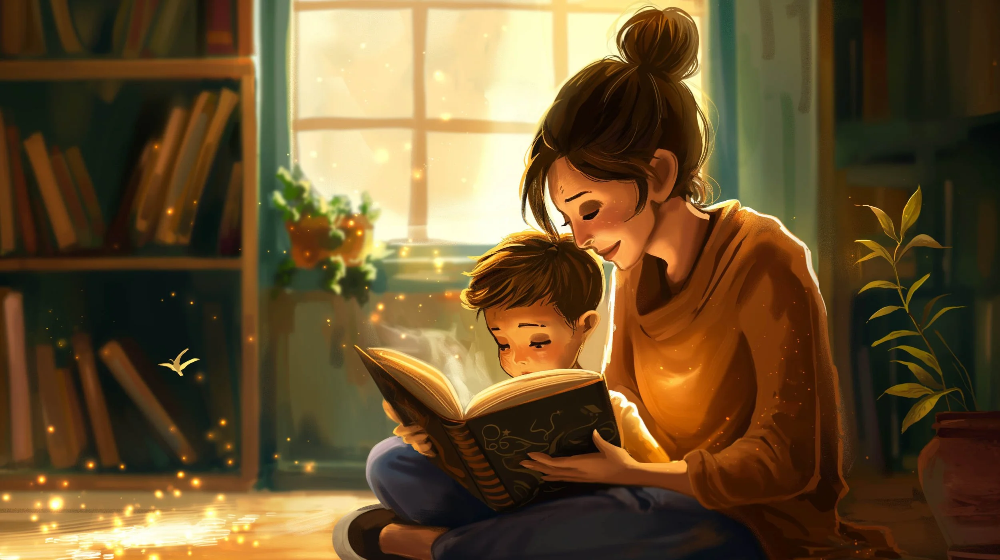
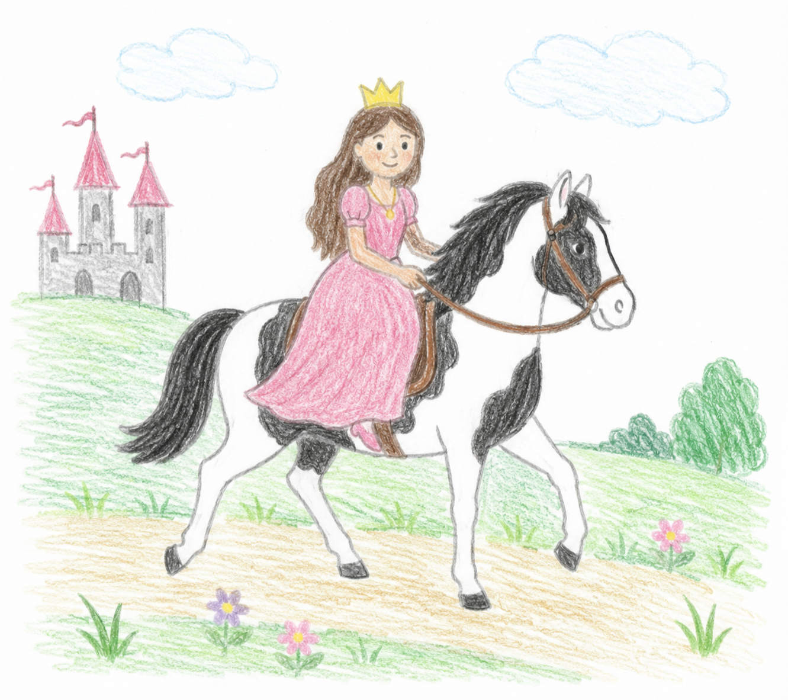
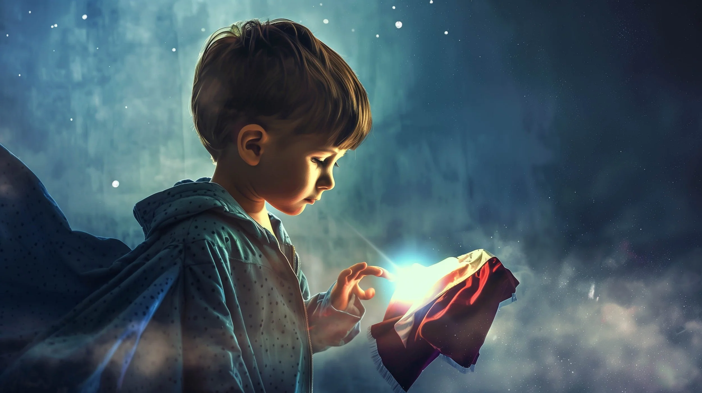
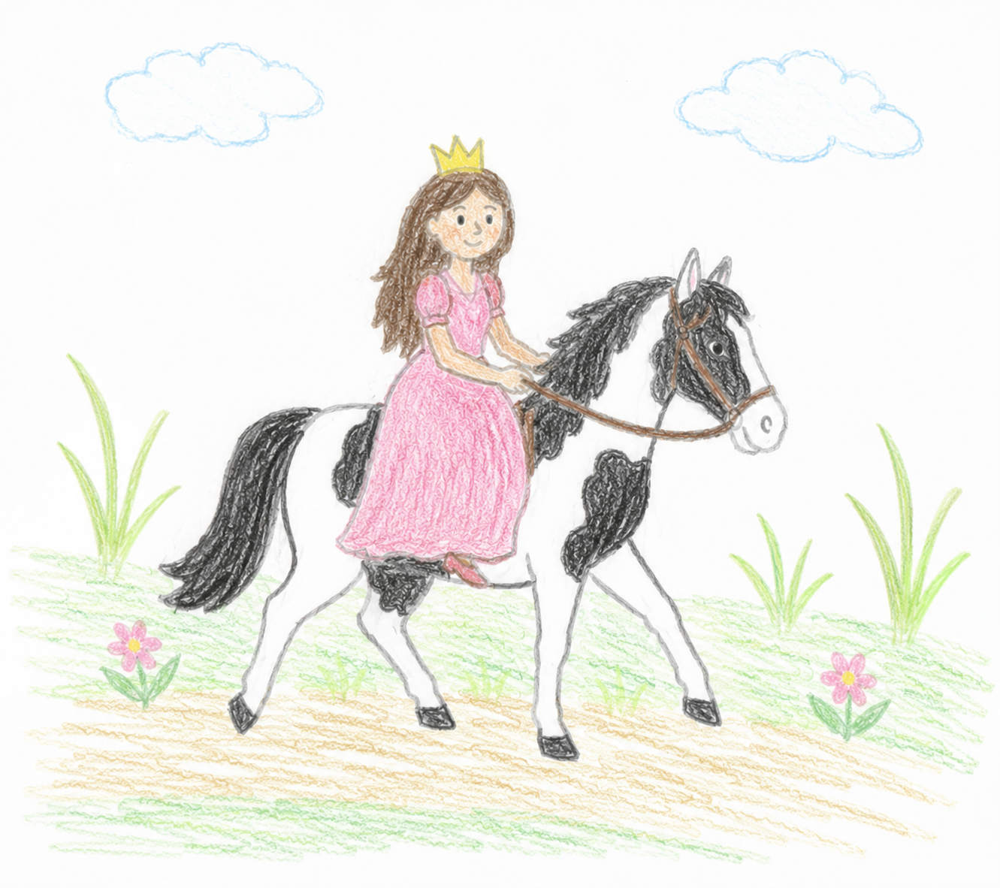

TIERE

ABENTEUER

EINSCHLAFEN

LUSTIG

LERNEN

WEIHNACHTEN

MUT

FREUNDSCHAFT
Vorlesen macht Freude!
Als Elternteil, Großelternteil oder Erzieherin bietet vorlesen.de alle Materialien die du brauchst, um Kindern die Welt der Geschichten zu öffnen.

Beruhigende Routine
Vorlesen schafft feste Rituale, die Kindern Sicherheit und Geborgenheit geben. Eine gemeinsame Lesezeit stärkt die Bindung zwischen Eltern und Kindern.
mehr erfahren →
Sprachentwicklung fördern
Durch regelmäßiges Vorlesen erweitern Kinder spielend ihren Wortschatz und entwickeln ein tiefes Verständnis für Sprache und Geschichten.
mehr erfahren →
Vorhandene Ressourcen
Bestehende Materialien werden sinnvoll wiederverwendet und ergänzt — so sparst du Zeit und kannst dich ganz aufs Vorlesen konzentrieren.
mehr erfahren →
Altersgerechtes Lernen
Programme speziell optimiert für zwei Altersgruppen — genau das Richtige zur richtigen Zeit für jedes Kind.
mehr erfahren →Vorlesen verbindet uns alle!
Ob jung oder alt, ob zuhause oder in der Schule — vorlesen.de bringt Menschen zusammen und macht Geschichten für jeden zugänglich.

Fantasie anregen
Ob Superheld, Rennfahrer oder Ritter — unsere Geschichten entführen Kinder in aufregende Welten und lassen ihre Fantasie blühen.
mehr erfahren →Kostenlos starten
Alle Grundfunktionen sind kostenlos nutzbar. Entdecke unsere wachsende Bibliothek an Kindergeschichten ohne Registrierung.
mehr erfahren →Unsere Gemeinschaft
Tausende Familien nutzen vorlesen.de bereits täglich. Werde Teil unserer wachsenden Gemeinschaft und teile deine Erfahrungen.
mehr erfahren →
Wöchentlicher Newsletter
Verpasse keine neue Geschichte! Melde dich für unseren kostenlosen Newsletter an und erhalte jede Woche neue Leseempfehlungen.
mehr erfahren →